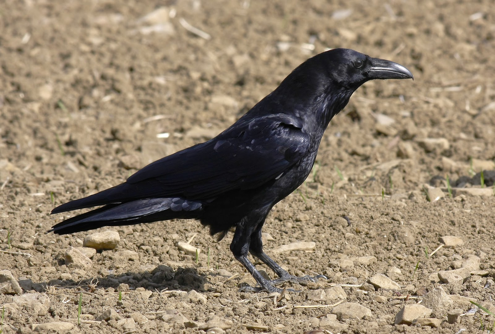

Decides confiar en el cuervo. Los cuervos son criaturas sabias, tu cuidadora siempre te lo decía. Cuando llaman así, insistentemente, es porque algo importante está pasando.
Sigues el sonido entre los árboles. El cuervo vuela de rama en rama, esperándote, asegurándose de que lo sigas. Tu cuerpo protesta - aún estás débil - pero algo te dice que esto es importante.
Después de varios minutos, llegas a un claro. El cuervo se posa en una roca y se queda en silencio.
Frente a ti hay dos cosas: una madriguera abandonada, perfecta para descansar y establecerte. Está protegida, tiene buena vista del área, y huele a que nadie la ha usado en meses.
Pero el cuervo no te mira a ti. Mira más allá, hacia un sendero que continúa adentrándose en el bosque. Hay algo más que quiere mostrarte.